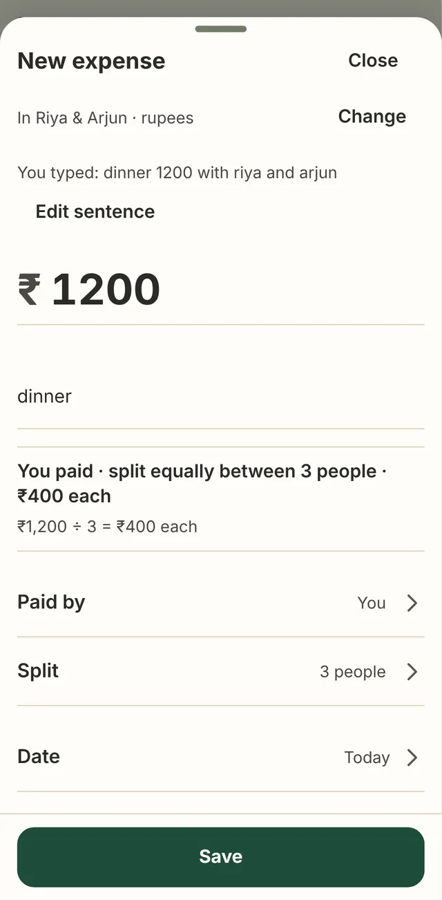

250 cases flipped to pass; 64.8% of them sat in the held-out split. Commit c7ea64e added test cases with the rules that read them.
78 of 80 easy test cases appeared word for word in the parser’s own unit tests.
The median note was five words. “dinner” was 37.5% of descriptions; five names made 83% of mentions.
Rules the parser assumed were missing from the models’ prompt. Fixing three lifted Opus from 65.5% to 83.0%.
Scenario cards first: who paid, who shares, and every balance to the paisa, before a single sentence existed.
Sentences written by 22 blind AI personas that never saw the parser:
Hidden test cases, double-labelled at 94.1% agreement and kept outside the repository.
right outcomes on the unseen sentences, with 5.5% silent errors.
The AI only sees the sentence, currency, date and locale. Your friends, balances and the sums stay on the phone.
